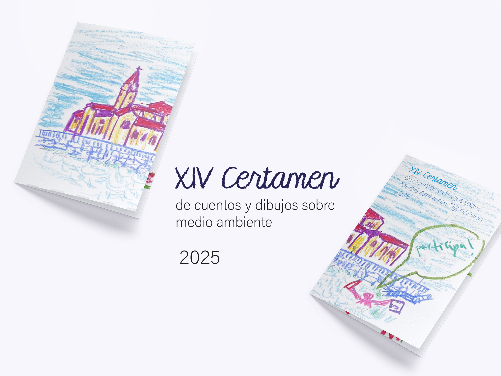
XIV Certamen de Cuentos y Dibujos sobre Medio Ambiente. Gijón 2025
Este proyecto editorial ficticio busca acercarse al público infantil mediante un estilo pictórico céreo y colorido. Se representan lugares emblemáticos de Gijón y animales marinos para fomentar la participación de los niños y concienciar sobre el cuidado del medioambiente.
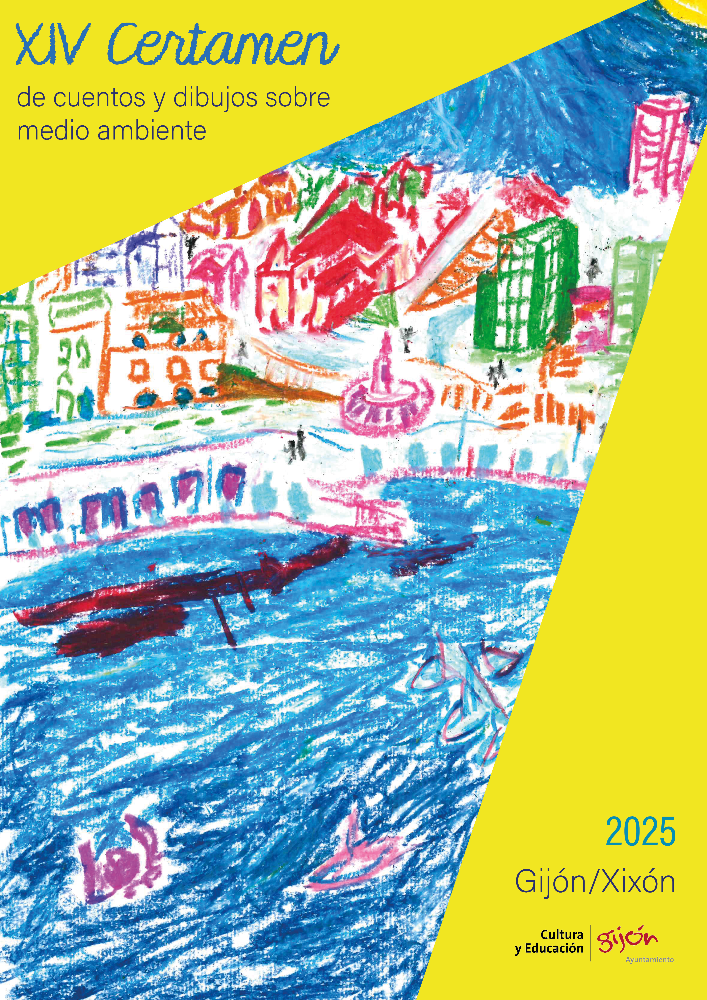
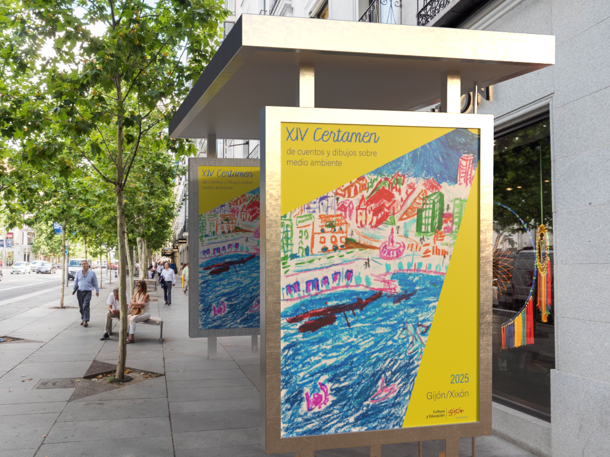
Poster anunciador del certamen.
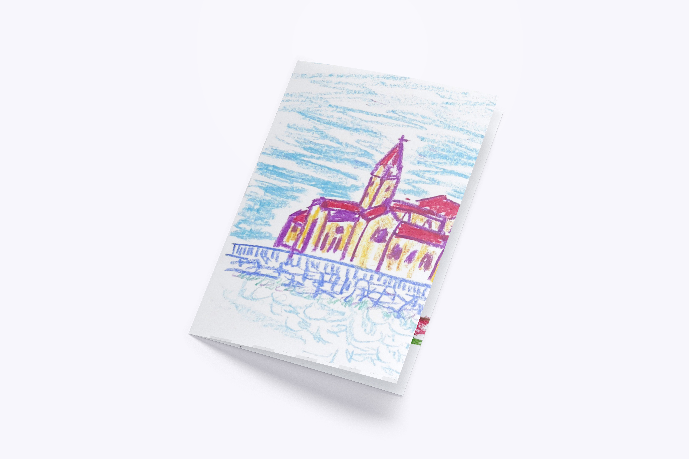
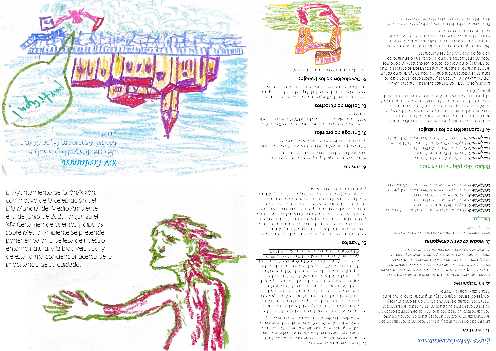
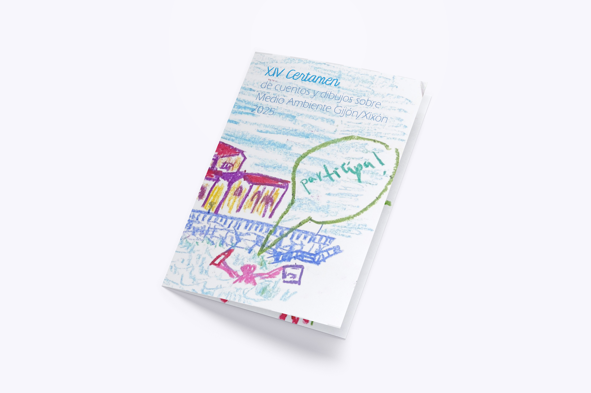
Folleto donde se maquetaron las bases del certamen.
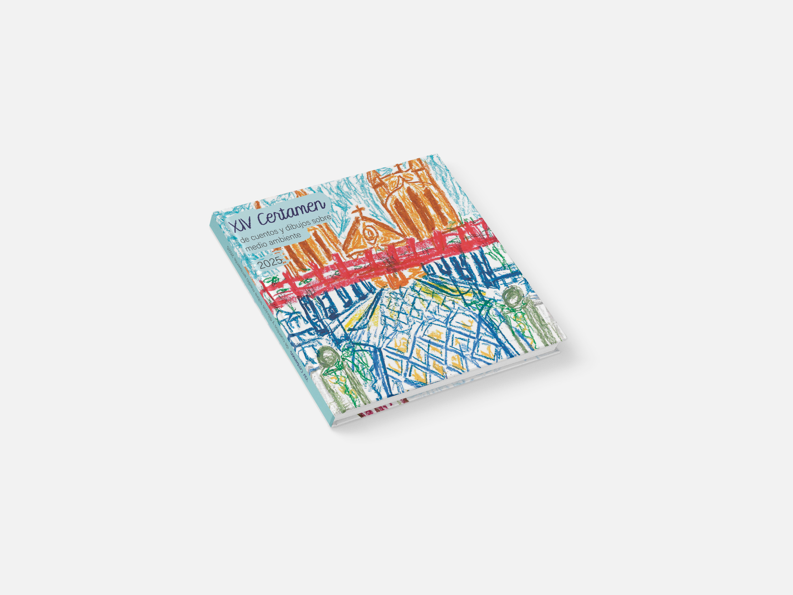
Portada del libro donde se revelan los ganadores del certamen del año correspondiente
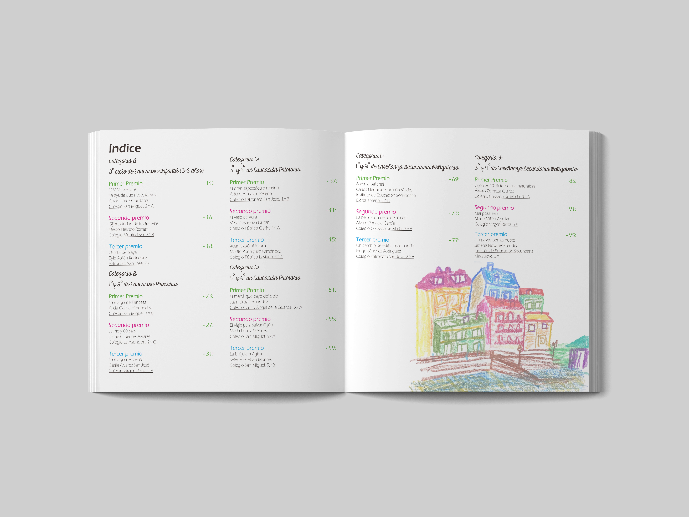
Índice del libro, donde se muestran los ganadores divididos por categorías.
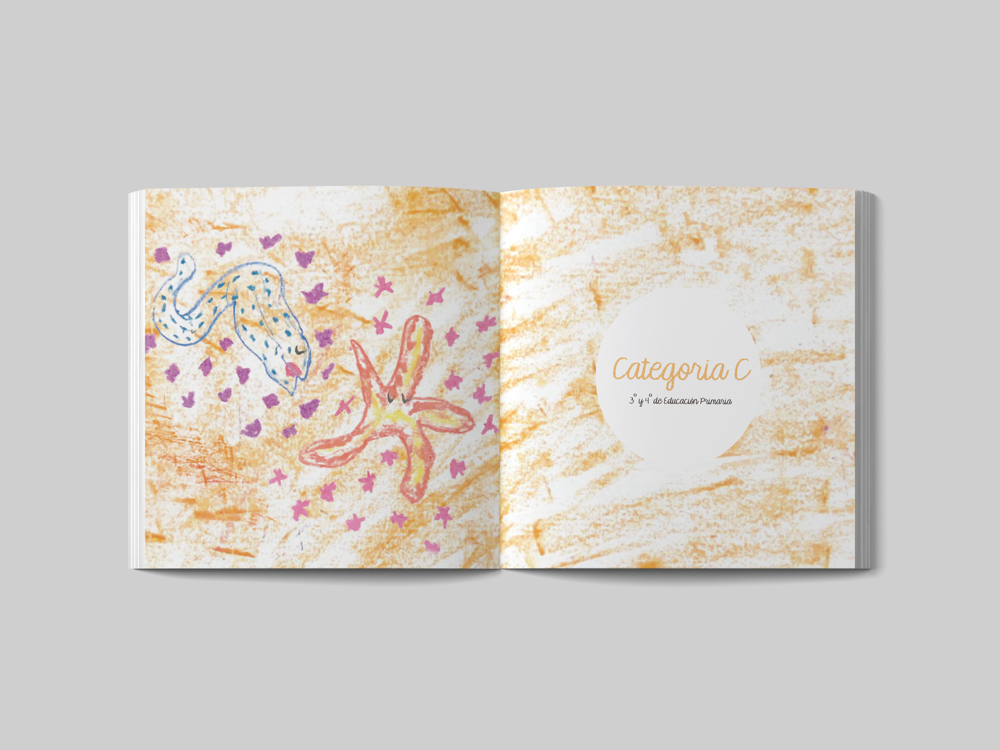
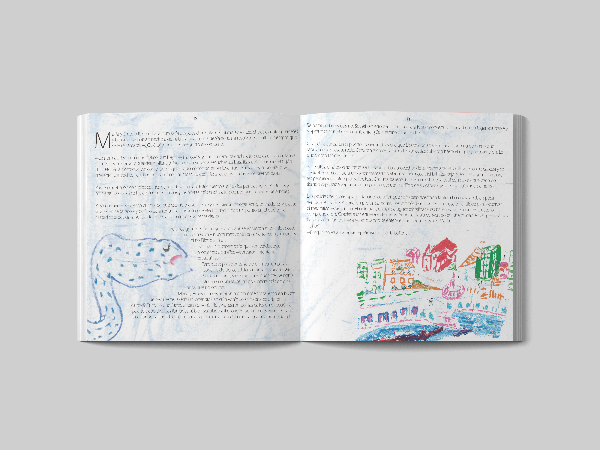
Interior del libro, visionado de uno de los cuentos ganadores.
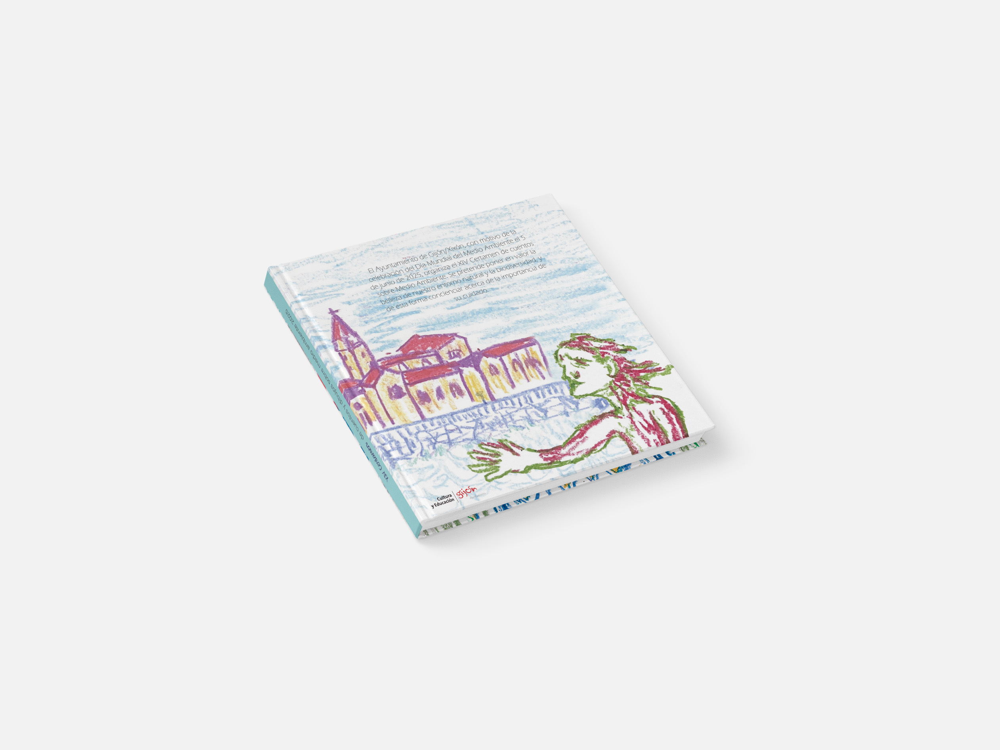
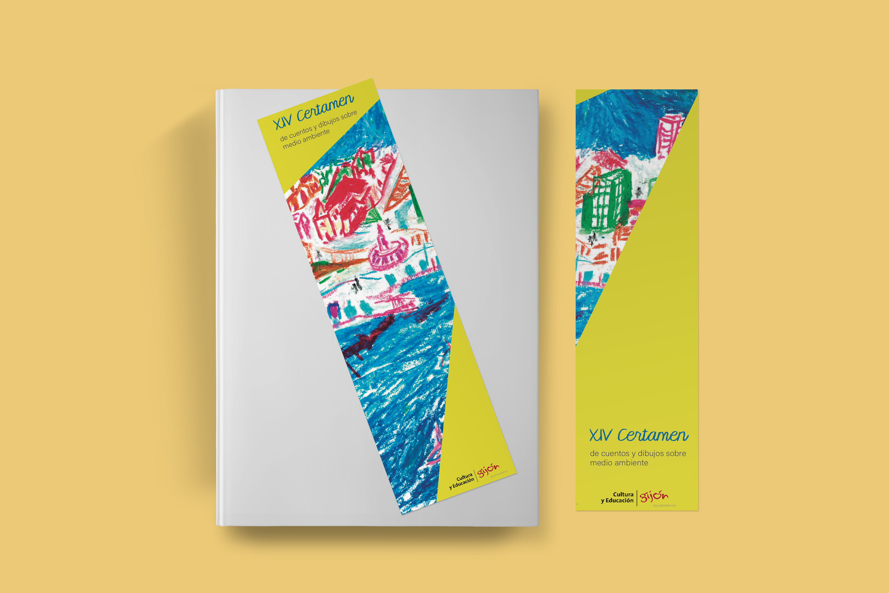
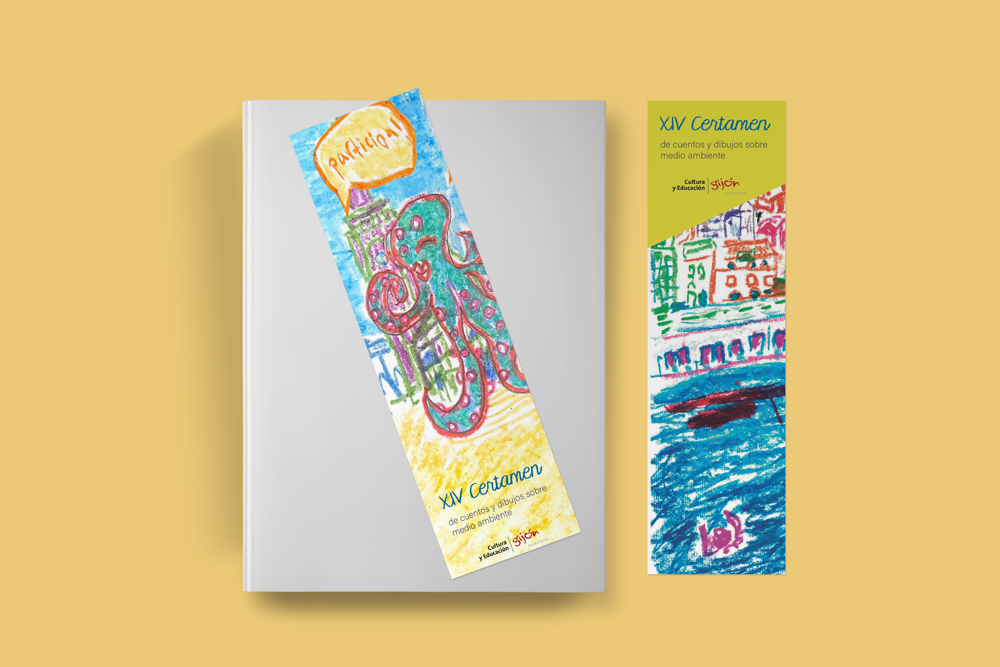
Marcapáginas edición especial del certámen 2025.
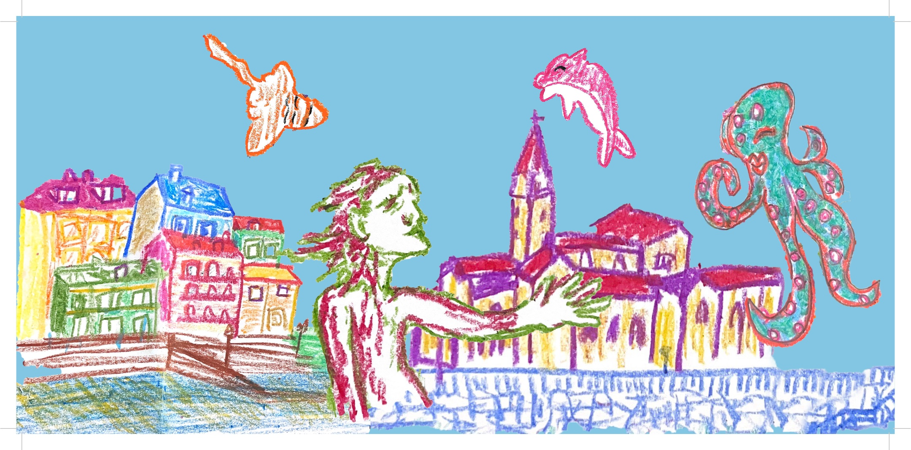